Visuals.
Moments captured from analog and digital realms.
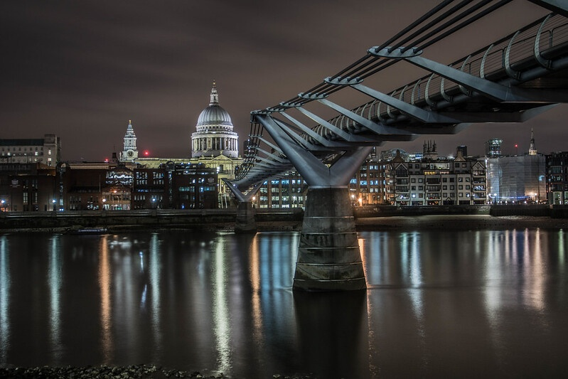
01 — Urban
London
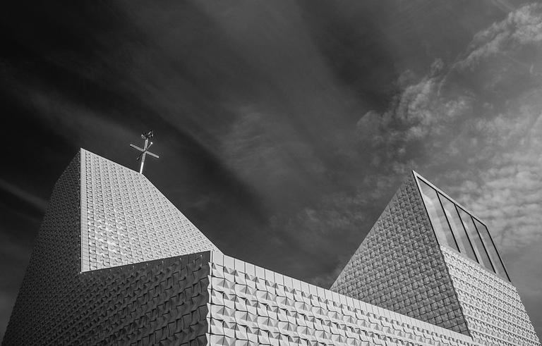
02 — Architecture
Church, Poing
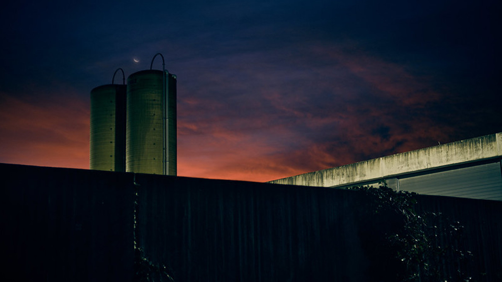
03 — Scene
Early Morning
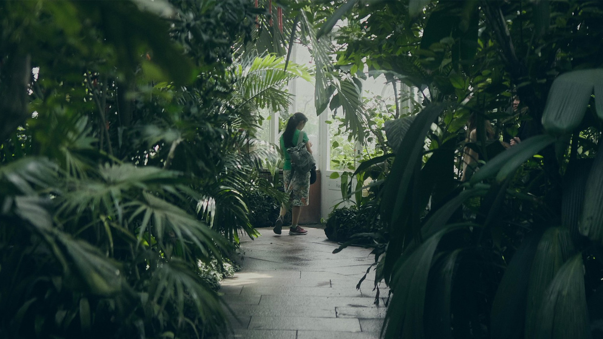
04 — Scene
Botanical Garden
05 — Portrait
Steve Wozniak
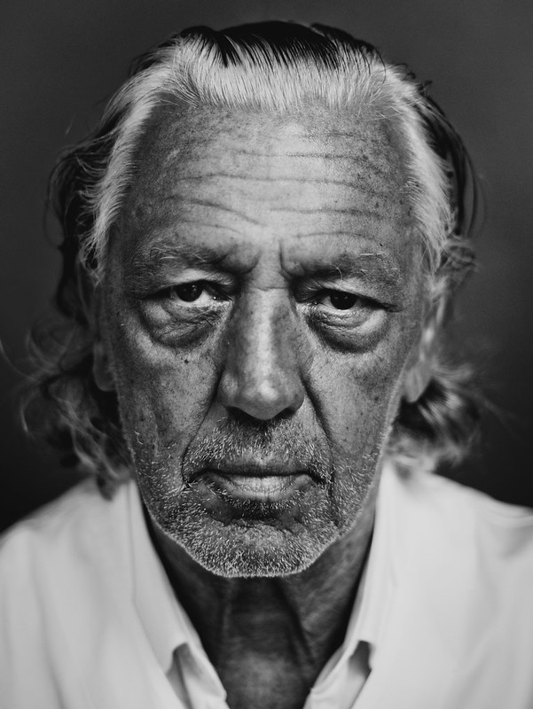
06 — Portrait
Charles Schumann
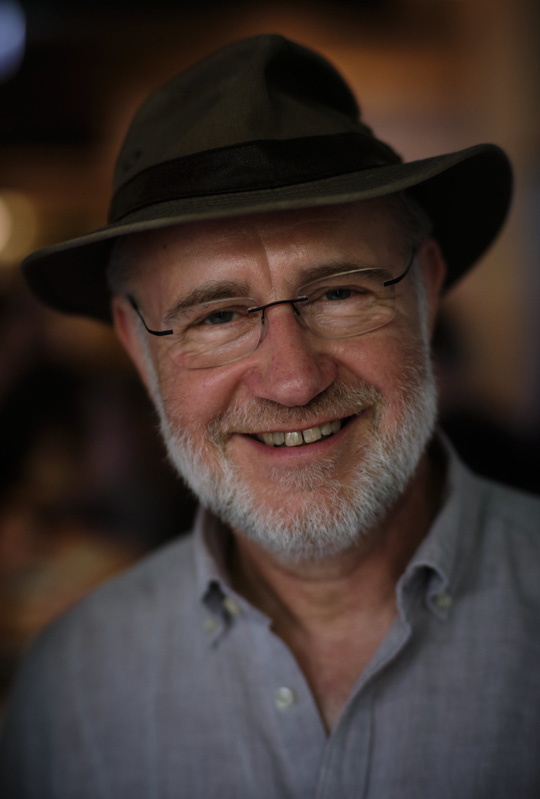
07 — Portrait
Harald Lesch
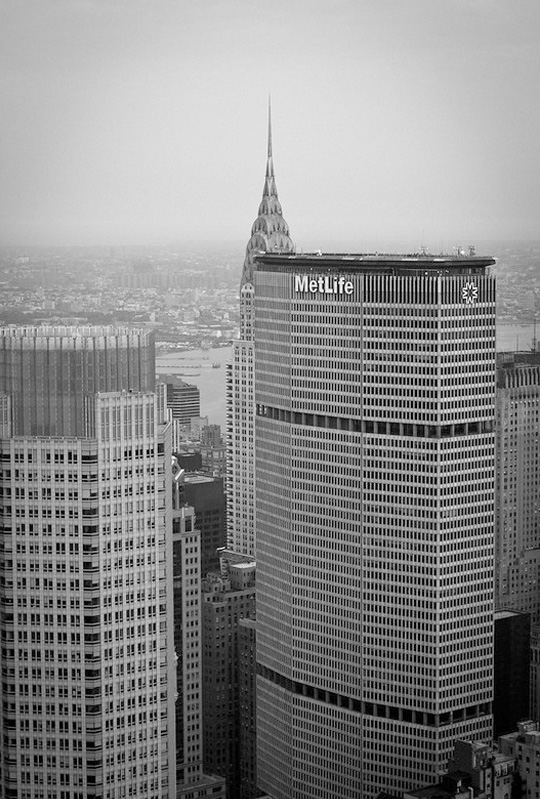
08 — City
New York City
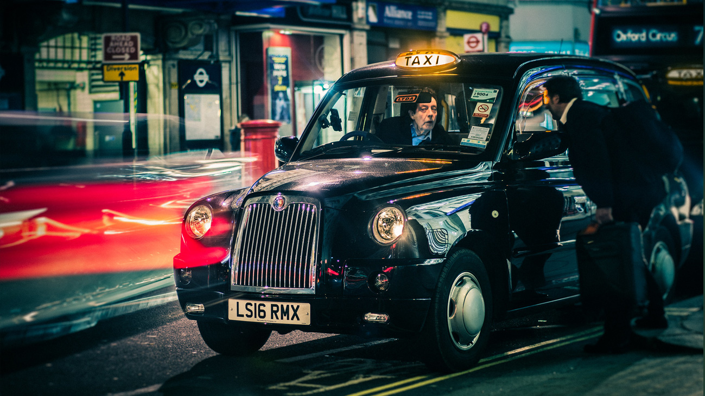
09 — Street
London
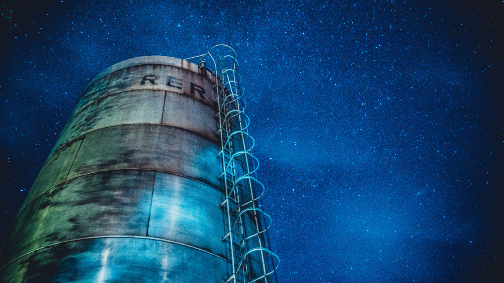
10 — Long Exposure
Silo
11 — Portrait
Fede Alvarez
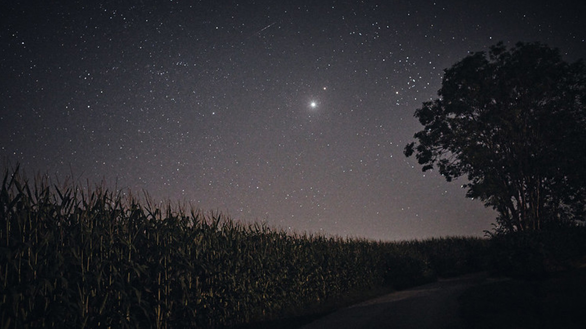
12 — Nature
Field
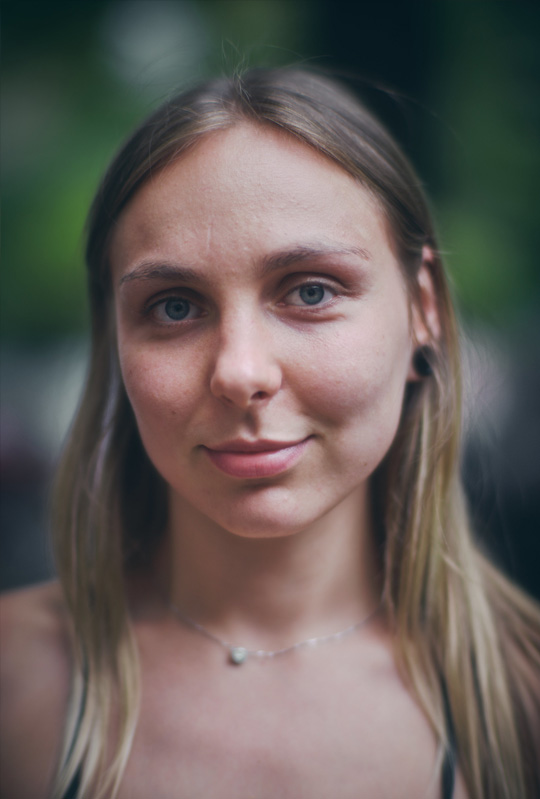
13 — Portrait
Slavina
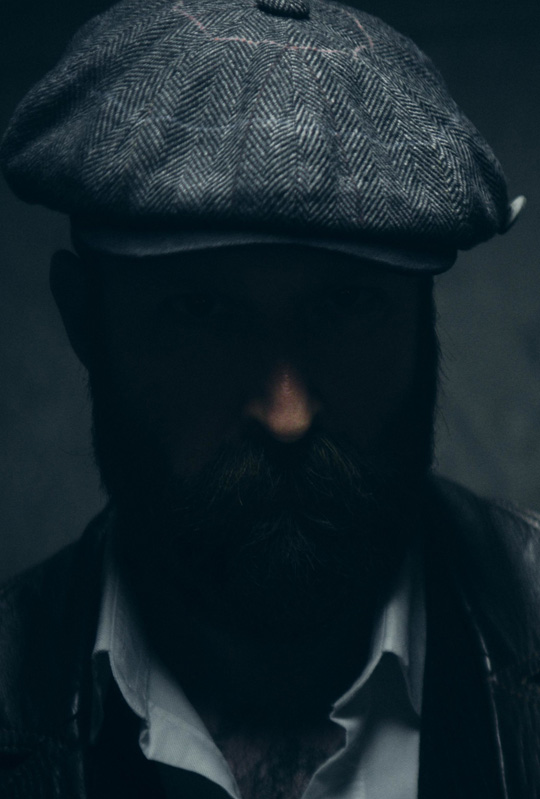
14 — Person
Contrasts
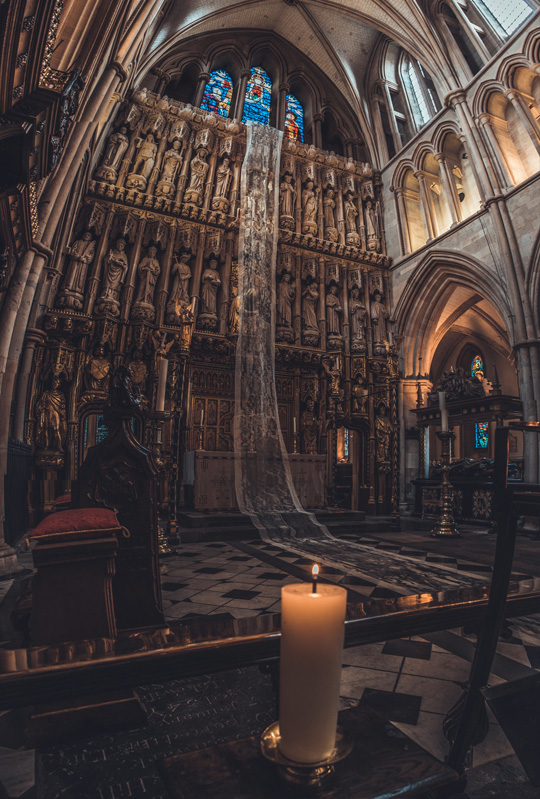
15 — Architecture
Southwark Cathedral
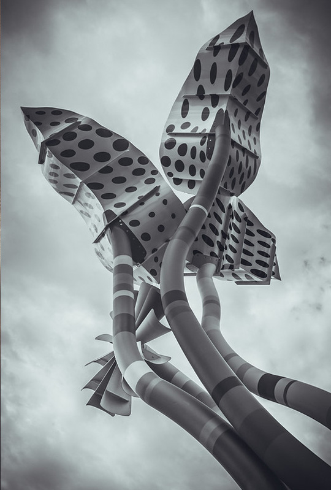
16 — Sculpture
Poing
See More
More photography can be viewed on Michael's dedicated photo website, on Flickr, and on Unsplash.